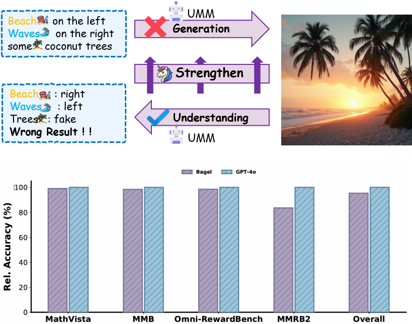

UniCorn: Towards Self-Improving Unified\\ Multimodal Models through Self-Generated Supervision
UniCorn: Towards Self-Improving Unified\\ Multimodal Models through Self-Generated Supervision
1MoE Key Lab of BIPC, USTC
2FDU
3ECNU
4CUHK
5NJU
6SUDA
*Equal Contribution
†Equal Contribution
‡Corresponding Authors
Abstract
While Unified Multimodal Models (UMMs) have achieved remarkable success in cross-modal comprehension, a significant gap persists in their ability to leverage such internal knowledge for high-quality generation. We formalize this discrepancy as Conduction Aphasia, a phenomenon where models accurately interpret multimodal inputs but struggle to translate that understanding into faithful and controllable synthesis.
To address this, we propose UniCorn, a simple yet elegant self-improvement framework that eliminates the need for external data or teacher supervision. By partitioning a single UMM into three collaborative roles: Proposer, Solver, and Judge, UniCorn generates high-quality interactions via self-play and employs cognitive pattern reconstruction to distill latent understanding into explicit generative signals.
To validate the restoration of multimodal coherence, we introduce UniEval, a cycle-consistency benchmark based on a Text → Image → Text reconstruction loop. Extensive experiments demonstrate that UniCorn achieves comprehensive and substantial improvements over the base model across six general image generation benchmarks. Notably, it achieves state-of-the-art (SOTA) performance on TIIF (73.8), DPG (86.8), CompBench (88.5), and UniEval (46.5), while further delivering substantial gains of +5.0 on WISE and +6.5 on OneIG. These results highlight that our method significantly enhances T2I generation while maintaining robust comprehension, demonstrating the scalability of fully self-supervised refinement for unified multimodal intelligence.
Motivation

Unified Multimodal Models (UMMs) often exhibit a significant understanding-generation gap: they can accurately critique errors in an image yet fail to generate the same scene correctly. This phenomenon, which we term conduction aphasia, motivates UniCorn to leverage the model’s superior internal understanding to refine its generative capabilities through self-contained feedback. Quantitative evaluations on benchmarks like Omini-RewardBench and MMRB2, normalized against GPT-4, further validate this discrepancy and the effectiveness of our self-improvement approach.
Framework
Overview of the UniCorn Framework. (a) Illustrates the self-multi-agent collaboration for high-quality data sampling. (b) Details the Cognitive Pattern Reconstruction process, which reorganizes data to facilitate robust and efficient learning. (c) Presents the UniCycle benchmark evaluation, verifying whether the model can accurately reconstruct key textual information from its own generated content.
Generation
$G$: T->I
Synthesizing images that strictly follow complex textual instructions.
Caption
$C$: I->T
Describing visual content to align internal knowledge with generation.
Judgement
$J$: I,T->T
Evaluating and scoring the quality and alignment of generated images.
Reflection
$R$: I,T->I
Reasoning about errors and providing feedback for iterative self-improvement.
Results
Quantitative Results

Evaluation results across six benchmarks—TIIF, WISE, OneIG, CompBench, DPG, and Geneval—demonstrate that UniCorn achieves highly competitive performance. Our method significantly enhances fine-grained instruction following and robustness to short prompts. On the comprehensive OneIG benchmark, it yields a 6.5-point overall improvement, driven by a remarkable 22.4-point gain in the Text subtask.
Furthermore, UniCorn effectively bridges the gap between structured understanding and faithful synthesis, with substantial gains in Numeracy (+13.1) and 3D Spatial (+6.1) tasks. Notably, it surpasses GPT-4o on the DPG benchmark (86.8 vs 86.2). These results consistently show that our self-play framework enables UMMs to achieve robust, controllable generation that rivals state-of-the-art closed-source models.
Qualitative results

Visualization results of UniCorn at 1024×1024 resolution.
BibTeX
@misc{han2026unicornselfimprovingunifiedmultimodal,
title={UniCorn: Towards Self-Improving Unified Multimodal Models through Self-Generated Supervision},
author={Ruiyan Han and Zhen Fang and XinYu Sun and Yuchen Ma and Ziheng Wang and Yu Zeng and Zehui Chen and Lin Chen and Wenxuan Huang and Wei-Jie Xu and Yi Cao and Feng Zhao},
year={2026},
eprint={2601.03193},
archivePrefix={arXiv},
primaryClass={cs.CV},
url={https://arxiv.org/abs/2601.03193},
}